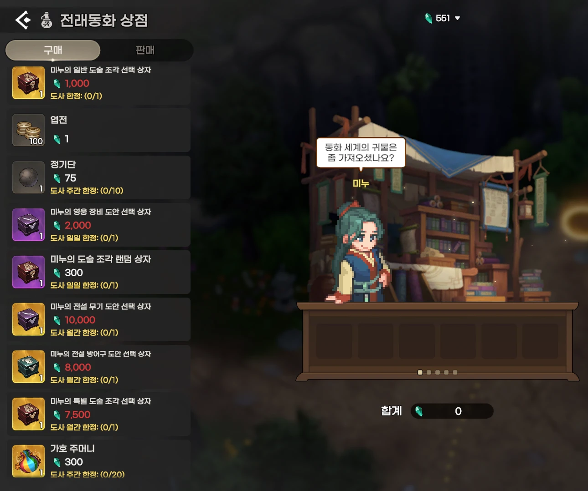
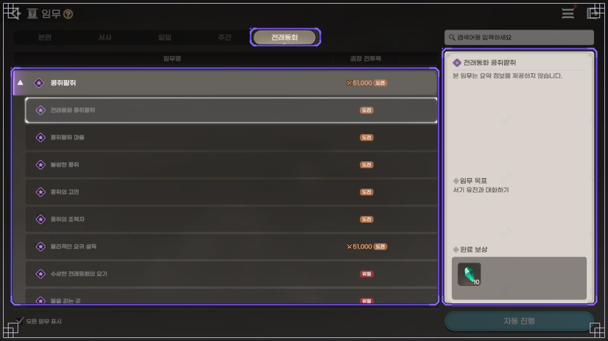
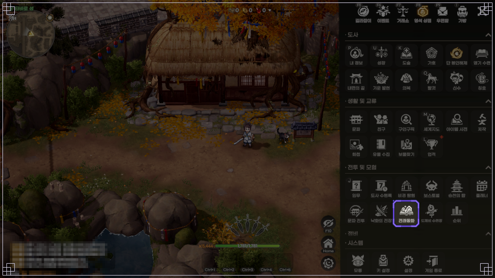
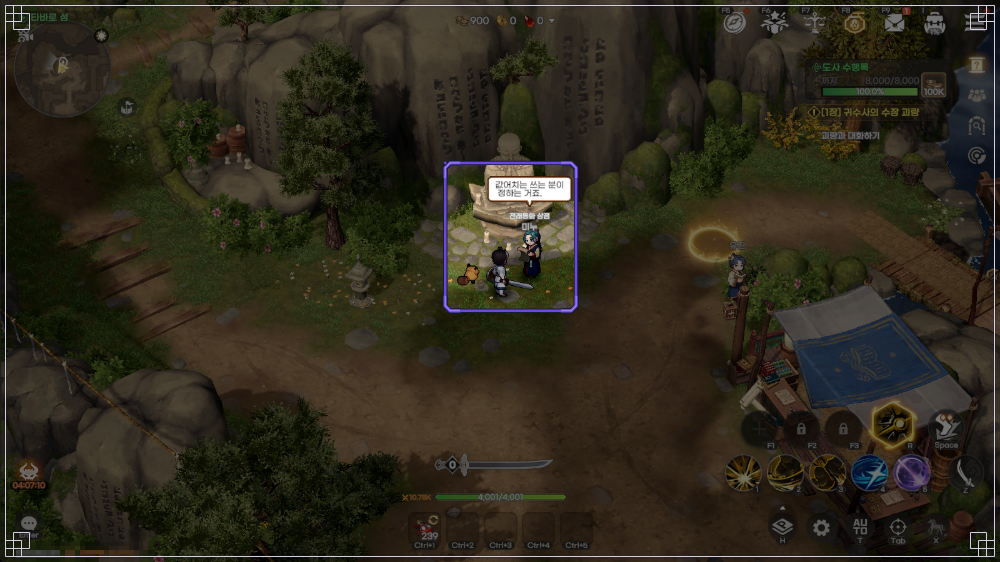
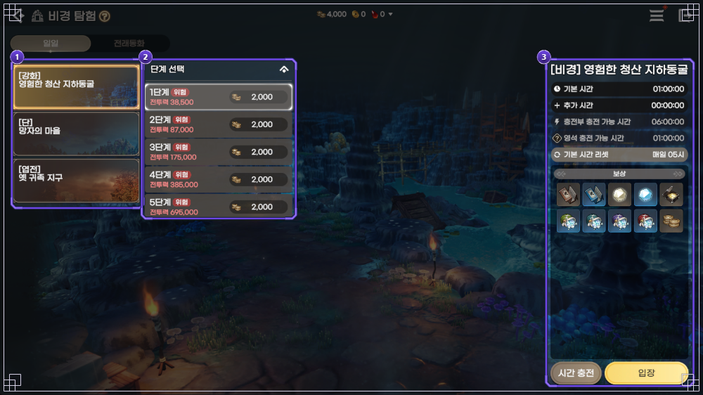

도깨비의세계 전래동화 꼭 해야 하는 이유, 별의 조각 얻는 법과 미누 상점 교환
전래동화라는 이름만 보면 이야기를 읽는 콘텐츠겠거니 싶어서 메뉴에 아이콘이 있어도 그냥 지나치기 쉬운데요, 타바로 성 미누 상점을 열어 보면 도술 조각 상자에 도안 상자, 가호 주머니까지 줄줄이 놓여 있더라고요. 한 번 열어 보면 미루기 어려운 구성이에요.
전래동화 임무(퀘스트)와 비경 탐험의 전래동화 비경에서 모은 '별의 조각'을 이 상점에서 도술 상자·도안 상자·가호 주머니로 바꾸는 구조라서, 이제 막 전래동화를 연 도사라면 꼭 하는 게 좋습니다.
도깨비의세계 전래동화 상점에는 뭐가 있길래 꼭 해야 하나요?
전래동화 상점에는 도술 조각 상자 3종, 장비 도안 상자 3종, 가호 주머니, 정기단이 한 곳에 모여 있어서 성장 재화를 여기서 한꺼번에 챙길 수 있어요.

전래동화 상점 구매 탭이에요. 맨 위 숫자 551이 보유 별의 조각이고, 품목 아래 '도사 한정: (0/1)'은 쓴 횟수와 한도입니다.
이미지: 인게임 직접 캡처(2026-10-11)
2026년 10월 11일 기준 · 전래동화 상점 교환표(전 품목 귀속)
| 품목 | 별의 조각 | 교환 한도 | 한 줄 풀이 |
|---|---|---|---|
| 미누의 일반 도술 조각 선택 상자 | 1,000 | 도사 한정 1회 | 도술 조각을 원하는 것으로 골라요 |
| 엽전 100개 | 1 | 제한 없음 | 별의 조각 1개에 엽전 100개예요 |
| 정기단 | 75 | 도사 주간 한정 10회 | 단 5등급 중 첫 등급이에요 |
| 미누의 영웅 장비 도안 선택 상자 | 2,000 | 도사 일일 한정 1회 | 장비 제작에 쓰는 도안을 골라요 |
| 미누의 도술 조각 랜덤 상자 | 300 | 도사 일일 한정 1회 | 확률로 나오고 고를 수 없어요 |
| 미누의 전설 무기 도안 선택 상자 | 10,000 | 도사 월간 한정 1회 | 전설 무기 도안을 골라요 |
| 미누의 전설 방어구 도안 선택 상자 | 8,000 | 도사 월간 한정 1회 | 전설 방어구 도안을 골라요 |
| 미누의 특별 도술 조각 선택 상자 | 7,500 | 도사 월간 한정 1회 | 확률이 낮은 특별 도술 조각을 골라요 |
| 가호 주머니 | 300 | 도사 주간 한정 20회 | 가호 조각이 나오는 확률형이에요 |
| [전래동화] 깨진 독 투구 | 1,500 | 도사 한정 1회 | 전래동화 전용 외형이에요 |
| [전래동화] 선녀 의복 / 원님 의복 | 1,500 | 도사 한정 1회 | 여자는 선녀, 남자는 원님 의복이에요 |
출처: 공식 이벤트 9226의 교환표를 풀이 중심으로 다시 정리했어요. 선택 상자의 구성은 깨비지지 기준(2026-10-11)이고 공식 풀이는 없습니다.
선택 상자에서 고를 수 있는 구성은 깨비지지 기준으로 영웅 장비 도안 11종(무기 5종·방어구 6종), 전설 무기 도안 5종, 전설 방어구 도안 6종, 특별 도술 조각 8종이에요. 특별 도술 조각은 랜덤 상자의 공식 확률표가 9종이라 한 종 차이가 나는데, 이유는 공식 글에 없습니다.
확률형 두 가지는 공식 공지에 확률이 있어요(랜덤 상자 9262 · 가호 소환 9267).
- 미누의 도술 조각 랜덤 상자는 일반 도술 조각 51종이 각각 1.9020%, 특별 도술 조각 9종이 각각 0.3333%예요(10월 8일 기준, 합계는 반올림).
- 가호 주머니는 소환하면 가호 조각이 나오고, 조각 100개를 모으면 가호를 하나 얻습니다(가호 가이드 7837). 묶음 등급별 확률은 전설(조각 100개) 0.1050%, 영웅(50~100개) 1.0500%, 희귀(20~70개) 25.5000%, 일반(1~50개) 73.3450%이고, 공식 주석대로 거래 불가·거래 가능 두 열을 합산해 합계를 100%로 맞춘 값이에요.
도깨비의세계 별의 조각 얻는 법, 임무랑 비경 중 어디서 얻나요?
별의 조각은 전래동화 임무를 완료하거나 비경 탐험의 전래동화 비경을 돌아서 얻어요. 공식 재화 TIP에 '비경 : 전래동화, 임무 : 전래동화'로 나란히 적혀 있습니다.
- 전래동화 임무는 임무 창의 '전래동화' 탭에서 '콩쥐팥쥐' 묶음을 따라가면 돼요. 임무는 한 캐릭터당 한 번만 진행하고 보상을 받습니다.
- 전래동화 비경은 비경 탐험 창 위쪽 '일일'·'전래동화' 두 탭 가운데 '전래동화' 탭이에요. 공식이 따로 풀이한 문장은 없지만 TIP의 '비경 : 전래동화'와 탭 이름이 같습니다.

임무 창 전래동화 탭이에요. 오른쪽 완료 보상 칸의 별의 조각 아이콘 옆 숫자가 10인데, 테스트 환경에서 만든 그림이라 실제 수량은 다를 수 있어요.
이미지: 도깨비의세계 공식 포럼 게임 가이드 7979(테스트 환경 화면)
비경 탐험 창에서 전래동화 탭을 눌러 둔 화면이에요.
임무를 끝까지 했을 때 별의 조각 총량, 전래동화 비경의 시간당 수급량, 상점 한도의 초기화 시각은 공식 글에 적혀 있지 않아요.
확인 위치: 임무 창 전래동화 탭 끝까지 스크롤 · 비경 탐험 ▶ 전래동화 탭 입장 화면 · 상점 한도 표기 '(사용/한도)' · 확인되면 위 문단을 수치로 교체
도깨비의세계 전래동화는 어디서 열고 어디로 가나요?
전래동화는 서사 임무 ‘[첫걸음] 신비한 동화 속으로 5’를 완료하면 열리고, 메인 화면 메뉴의 전래동화 아이콘으로 들어가요.
- 서사 임무를 마친 뒤 메뉴의 '전투 및 모험' 구역에서 전래동화 아이콘을 눌러요. 비경 탐험 아이콘은 따로 있습니다.
- 임무는 세계지도 ▶ 전래동화 마을에서 진행하고, 언제든 오갈 수 있어요.
- 별의 조각은 타바로 성 미누에게서 바꾸는데, 상인 위치는 세계지도로 볼 수 있어요(상점 가이드 7988).

메뉴 화면이에요. 강조된 전래동화 아이콘 윗줄에 비경 탐험이 따로 있어요.
이미지: 도깨비의세계 공식 포럼 게임 가이드 7979(테스트 환경 화면)

타바로 성 안 미누가 서 있는 자리예요.
이미지: 도깨비의세계 공식 포럼 게임 가이드 7979(테스트 환경 화면)
도깨비의세계 별의 조각이 모이면 뭐부터 사면 좋을까요?
지금 막힌 곳이 도안인지, 도술 조각인지, 가호인지부터 정하면 됩니다.
- 무기 도안이 막혔다면 영웅 장비 도안 선택 상자(2,000, 하루 1회)가 가까워요. 도안만으론 제작이 안 되고 재료가 따로 든다고 제작 가이드에 나와요. 가이드 그림의 재료 예시는 철 주괴·신기 가루·엽전이고 테스트 환경 화면이에요.
- 도술 조각이 모자라다면 선택 상자(1,000, 1회)는 골라 받고, 랜덤 상자(300, 하루 1회)는 확률에 맡기죠.
- 가호는 가호 주머니(300, 주 20회)로 늘리는데 확률형이에요.
- 외형 2종은 1회씩이라 시기만 고르면 되는데, 이벤트 기간은 12월 10일(목) 08:00까지예요(내부 상황에 따라 바뀔 수 있어요).
한도를 전부 채우는 데 드는 별의 조각은 주기별로 이렇습니다.
| 주기 | 품목 | 합계 |
|---|---|---|
| 주간 한정 | 정기단 750(10회) + 가호 주머니 6,000(20회) | 6,750 |
| 일일 한정 | 영웅 장비 도안 선택 상자 2,000 + 도술 조각 랜덤 상자 300 | 2,300 |
| 월간 한정 | 10,000 + 8,000 + 7,500 | 25,500 |
| 1회 한정 | 1,000 + 1,500 + 1,500 | 4,000 |
일일 2,300은 하루에 쓸 수 있는 한도이지 하루에 버는 양이 아니에요. 1회 한정과 월간 한정을 한 번씩 다 사는 값은 29,500이고, 제 보유량은 551이라 한참 멀었네요~ ㅎㅎ
도깨비의세계 전래동화와 같이 챙길 만한 공식 안내
전래동화와 함께 챙기면 좋은 공식 안내가 네 가지 있어요.
| 안내 | 내용 |
|---|---|
| 성장 지원 미션 | 초보 도사 성장 지원(10월 21일(수) 08:00까지) 1일 차에 ‘[첫걸음] 전래동화 서사 임무 완료하기’가 있고 엽전(귀속) 25,000개를 줘요(이벤트 9237). |
| 보스 완화 | 10월 9일 임시 점검(공지 11050) 뒤로 전래동화 퀘스트 보스 장설독섬이 주는 피해가 줄었고, 패턴 사이에 평타를 쓰는 빈도가 늘었어요. |
| 엽전 2배 | 같은 점검 뒤 필드·비경·전래동화 비경·낙화의 전장에서 몬스터를 잡으면 엽전이 두 배로 나와요. 퀘스트·상자로 받는 엽전은 그대로입니다. |
| 알려진 현상 | 전래동화 지역에서 얻는 아이템 양이 안내와 어긋나고, 콩쥐팥쥐 지역 축지술 비용이 위치마다 다르게 매겨지는 현상이 오류 통합 안내(공지 10859)에 올라 있어요. 10월 11일 기준 수정 완료 표시는 없습니다. |
도깨비의세계 전래동화 자주 묻는 질문
Q. 가호 주머니는 별의 조각 말고 어디서 구하나요?
문파 상점·단각 교환·낙화의 증표 상점에서도 팔고(재화 TIP), 타바로 성 금옥의 금전 상점에서도 살 수 있습니다(상점 TIP). 도사 수행록 보상으로도 받아요(수행록 가이드 7941).
Q. 전래동화 비경은 하루에 몇 시간 들어갈 수 있나요?
비경 탐험 가이드 7943는 영험한 청산 지하동굴·망자의 마을·옛 귀족 지구 세 곳을 합해서 기본 1시간, 매일 05시에 초기화된다고 적었어요. 전래동화 비경이 이 합산에 들어가는지는 안 나와 있습니다.

비경 탐험 창 위쪽에 일일과 전래동화 탭이 나란히 있어요. 그림은 일일 탭이 선택된 화면이고, 기본 시간 01:00:00과 '기본 시간 리셋 매일 05시'가 보여요.
이미지: 도깨비의세계 공식 포럼 게임 가이드 7943(테스트 환경 화면)
Q. 12월 10일이 지나면 상점과 별의 조각은 어떻게 되나요?
공식 글에는 그 뒤 처리가 적혀 있지 않아요. 임무는 주기적으로 추가된다는 안내만 있고, 출시 전 시연회 Q&A(공지 1132)에서 다음 이야기로 ‘의좋은 형제’와 ‘흥부와 놀부’ 등을 준비한다고 밝혔어요.
도깨비의세계 전래동화 정리
막힌 곳 하나만 정해서 그 상자부터 챙겨 보시는 걸 추천드려요.
✔ 도깨비의세계 같이 보기 좋은 내용
· 도깨비의세계 필드보스 시간 요일별 일정표, 신기 쟁탈전 미혹의 정원 문파전 시간까지 한 장으로
· 도깨비의세계 쿠폰 4종 정리, 코드 입력하는 법과 마감일 한눈에
· 도깨비의세계 무기 추천, 무기 5종 고르는 기준과 장비 강화 개방 돌파 각성 순서 (10월 10일 글)
· 도깨비의세계 도술 티어 2026년 10월 11일 기준, 도술 스타일 12종 사냥 보스 PvP 용도별 추천 (10월 11일 글)
참고한 곳
· 전래동화 : 콩쥐 팥쥐 이벤트(9226)
· 게임 가이드 전래동화(7979)
· 재화 TIP(8076)
조회한 곳(비공식)
· 깨비지지 아이템 · 전래동화 상점 입수 카드 · 10월 11일 조회